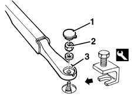

5050B32 windscreen wiper arm/s - r+r
- Path
- Procedures > 50 AUXILIARY UNITS > 5050 SCREEN WASHERS AND HEADLAMP WASH/WIPE > 5050B WINDSCREEN WASH/WIPE > 5050B32 windscreen wiper arm/s - r+r
- Kind
- repair procedure (removal / refitting; the operation number is the code)
- Applies to
- all engines; all production periods
- Interactive page
- https://sloeber94.github.io/elrnDB-fMltpl/en/#/2891847
Applies to: all engines; all production periods
 Removing
Removing
 Refitting
Refitting1. Remove the nut cover.
2. Undo the nut.
3. Remove the wiper arm using the special tool.
 | Name | Country |
|---|---|---|
3 | Extractor | 1.870.717.000 |

Applies to: all engines; all production periods
Refitting
RemovingCheck that the wiper arm and the blade are not damaged.
Refit the wiper arm, fixing it with the nut.
 | Fastening | Component | Ø | Value (daNm) |
|---|---|---|---|---|
- | Bolt | WINDSCREEN WIPER ARM/S | M6 | 18 |
Refit the nut cover.
Check that the windscreen wiper works properly.
Topics that link to this page (12)
- 1004B12 power unit with manual gearbox - r+r for versions with a/c
- 1060G90 diesel injection wiring harness - r r
- 5010B08 VENTILATION SYSTEM OUTSIDE AIR PURIFYING FILTER (ANTIPOLLEN) - R+R
- 5050B10 FRONT WINDSCREEN WASHER JETS - R+R CLEAN AND/OR POSITION
- 5050B38 WINDSCREEN WIPER ASSEMBLY - R+R OR REPAIR
- 5050B42 WINDSCREEN WIPER MOTOR - R+R
- 5050B52 front windscreen wiper motor intermittent function - r r
- 7035A14 OUTER WINDSCREEN MOULDING - R R
- 7035A18 WINDSCREEN GLASS R R INCLUDING CLEANING OF HOUSING
- 7055A18 Windscreen base TRIM - R.R.
- 7055A20 FRONT TRIM under WINDSCREEN with main beam headlamps - R.R.
- 7210E22 WINDSCREEN BASE TRIM